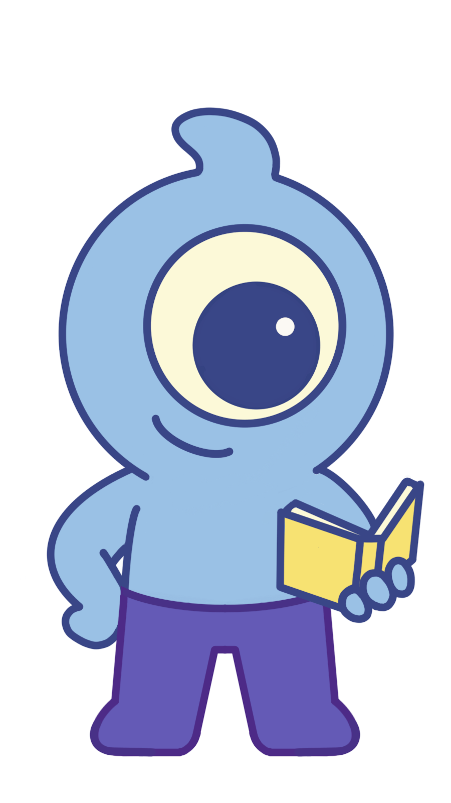

Temporizador
Tareas
Configuración
Iniciando...
Método de Enfoque:
Pomodoro (25/5)
Regla 52-17
Método 90/30
Método 45/15
Foco Profundo (120/30)
Personalizado
25:00
Tiempo de Estudio
Iniciar
Reiniciar
Mis Tareas Pendientes
+
Configuración y Bloqueo
Sitios a bloquear durante el enfoque:
Añade un sitio por línea (ej: youtube.com, facebook.com)
Guardar Sitios
Saliendo...